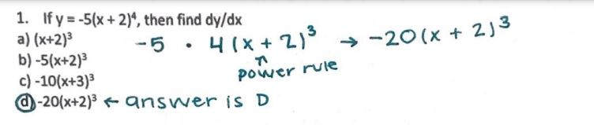
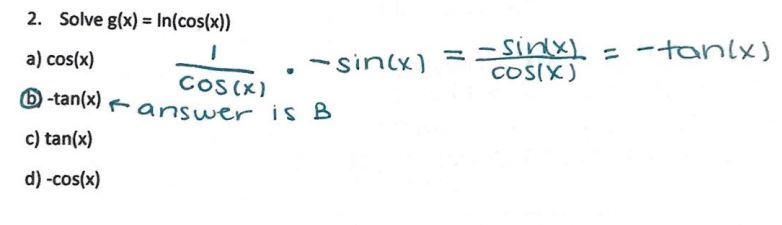
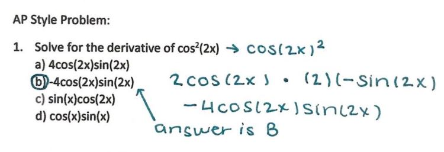
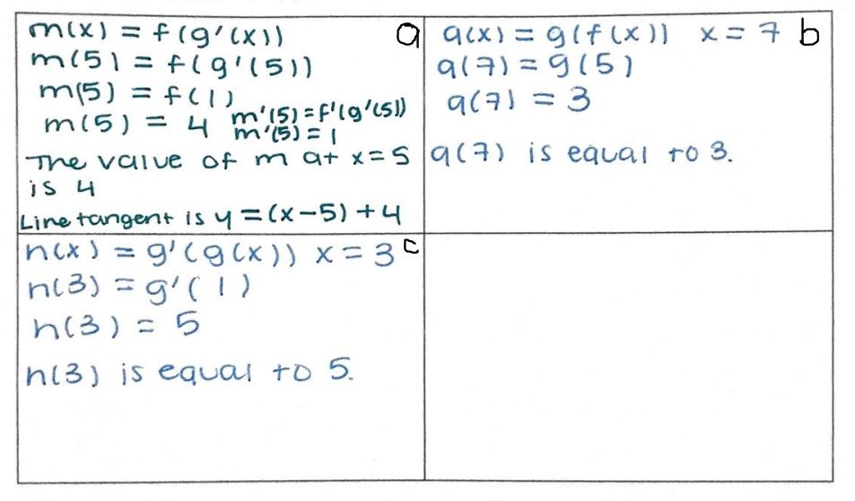

| Limits with Algebraic Manipulation | Chain Rule | Extreme Value Theorem | Right Riemann Sums | Antiderivatives | Volumes of solids (Washer Method) | Solve the case! | Back to Home Page |
Made by: Kara Ho and Akshita Ramesh, AP Calculus Block 5, Mrs. Burns' Class
Welcome to your second mission: Chain Rule! Here's a brief overview of what you'll need to do to complete your mission:
The chain rule is a formula which expresses the derivative of two differentiable functions by multiplying each component of a
differentiable function’s derivative by the outer portions. To think about it, it’s just like a cake: you start with the first layer
of cake, add some frosting on the cake, and then you put on the second layer of cake, and then seal the cake with a coat of icing
all over it. Your first layer of cake is your inner differentiable function, and the second is the outer.
The notation for chain rule is most
often seen as h'(x) = f'(g(x)) * g'(x)
It can also be shown as dz/dx = dz/dy * dy/dx
Here are some example problems! We'll work
through them with you.
1. insert question here

2. insert question here

To see how the questions are solved, see the procedures below!
|  |  |
Lets try a multiple choice question on your own this time. You've got this! You can check your answer by clicking on the picture to the right.
|
|  |
Now lets try a free-response question! To check your answers, click the picture on the right

|  |